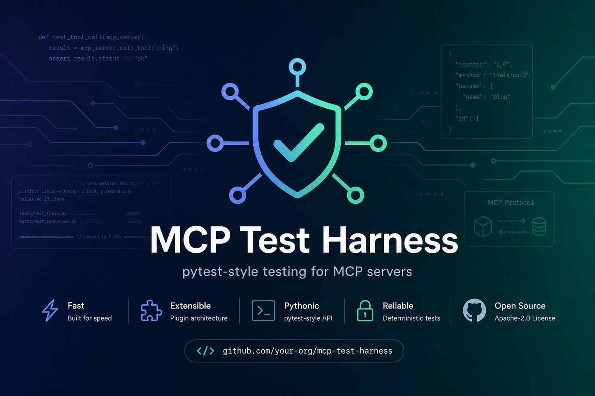
Discover, run, and report on MCP server tests automatically. Functional + regression + performance testing in one tool. Replace manual MCP Inspector validation with repeatable CI-native automation.
From live MCP traffic to CI gates — no manual test authoring bottleneck.
mcp-test record captures real tool calls and writes tests + snapshots (RFC-001).
mcp-test generate drafts test files from tool definitions and JSON cassettes.
GitHub Action, mcp-test-try pre-commit hook, conformance badge, SARIF for security findings.
840+ tests, 100% library coverage gate, e2e dogfood in CI. Everything below is implemented in this repo — not roadmap slides.
init, try, record, generate, experiment, conformance, export-pdf, doctor
Console, JUnit, JSON, HTML dashboard, PDF export, MCP trace timeline
@marker chaos_faults, experiment catalog, throughput SLO params
SARIF export, OWASP MCP rules, authorization boundaries, Bastion pairing
Levels + badge (RFC-002); stateless SEP-2575 via mcp-test conformance stateless (RFC-006)
GitHub Marketplace Action, pre-commit hook, Docker GHCR, PyInstaller binary
Core + 17 LLM/framework shims — live widget on Integrations
Tool coverage map, unified portal in reports, performance baselines
pytest spawns real mcp-test CLI against bundled FastMCP fixtures
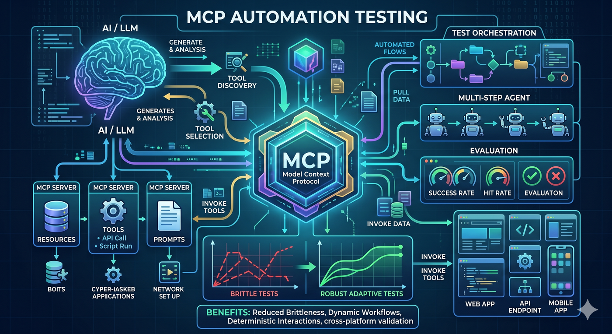
Architecture, CI pipeline, ecosystem positioning, and assertion library — full deck with print-to-PDF.
Open features deck Ecosystem map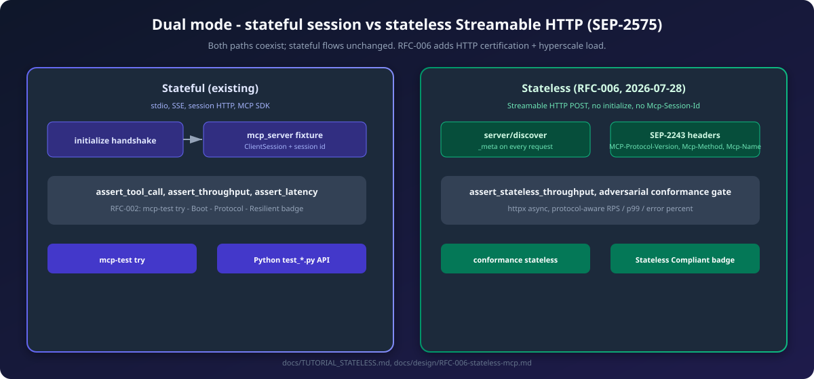
Certify Streamable HTTP endpoints with adversarial conformance checks and gate agent-scale load — without breaking stateful mcp-test try or session fixtures.
mcp-test conformance stateless --url http://localhost:8080/mcp --generate-badge
Stateless tutorial
RFC-006
Same assets as the README — architecture, CI, transports, reports, ecosystem, and dogfood flow.

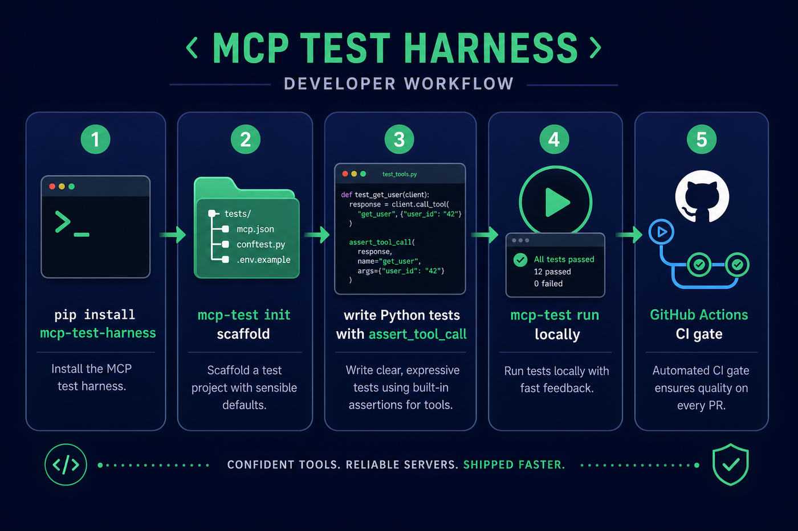
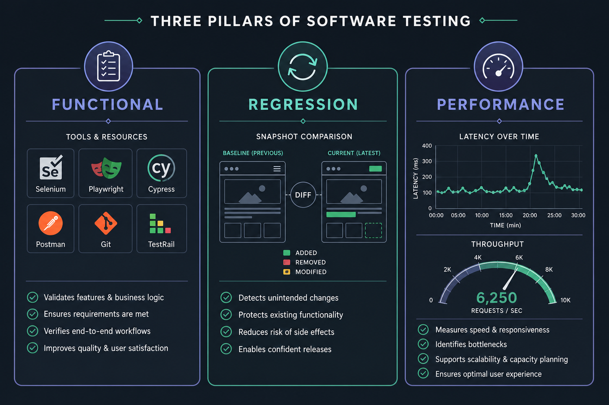

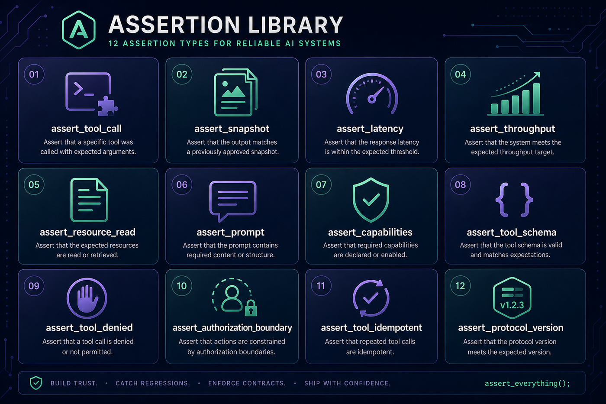
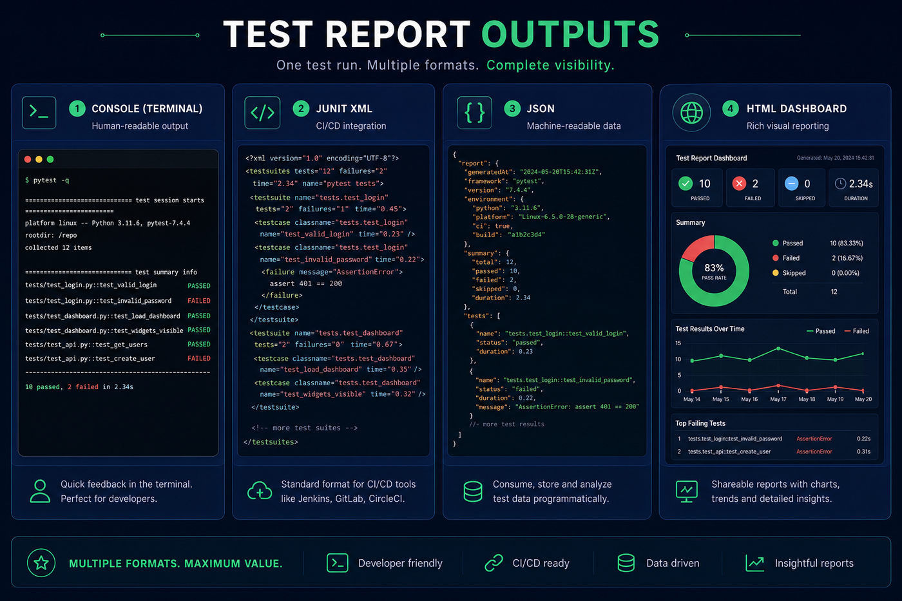
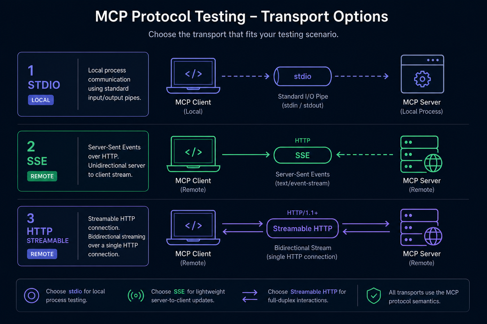

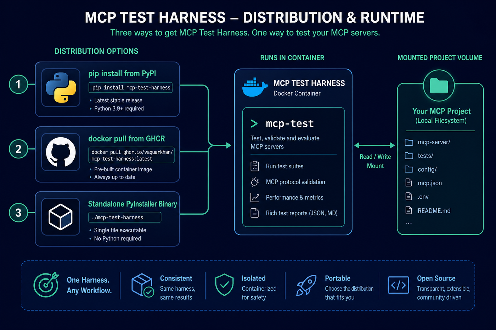
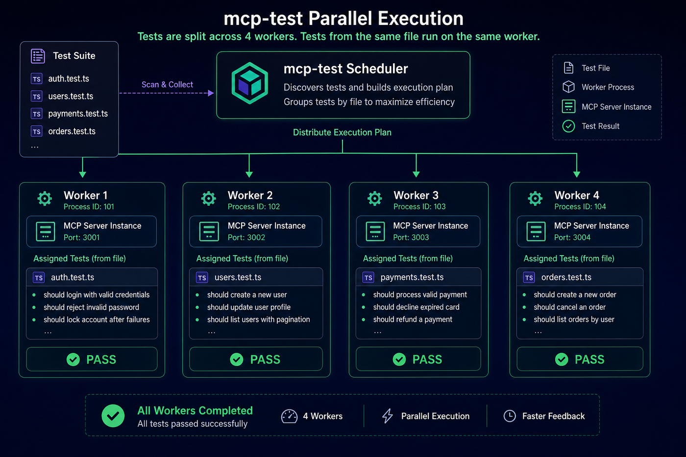


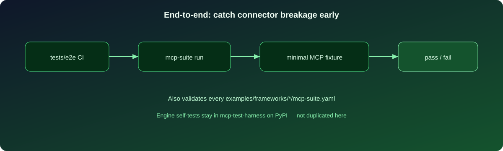
MCP Inspector is great for exploration. But you can't put a GUI in CI. You need deterministic, repeatable, code-first tests that run on every push.
One workflow validates both answer quality and time-to-answer in CI.
assert_tool_call, assert_resource_read, assert_prompt, assert_capabilities, assert_tool_schema, assert_protocol_version. Direct MCP protocol testing.
assert_snapshot with ignore_fields and mask_patterns. assert_tool_idempotent for determinism checks. Catch silent regressions before they ship.
assert_latency with p95/p99/mean/median over N runs + warmup. assert_throughput for concurrent load and RPS. SLO-style gates in CI.
Like JMeter HTML dashboards, the harness ships a rich self-contained HTML report with stat cards, charts, chaos/load panels, and security findings.
Export a shareable PDF summary with Save as PDF in the report or mcp-test export-pdf report.html in CI.
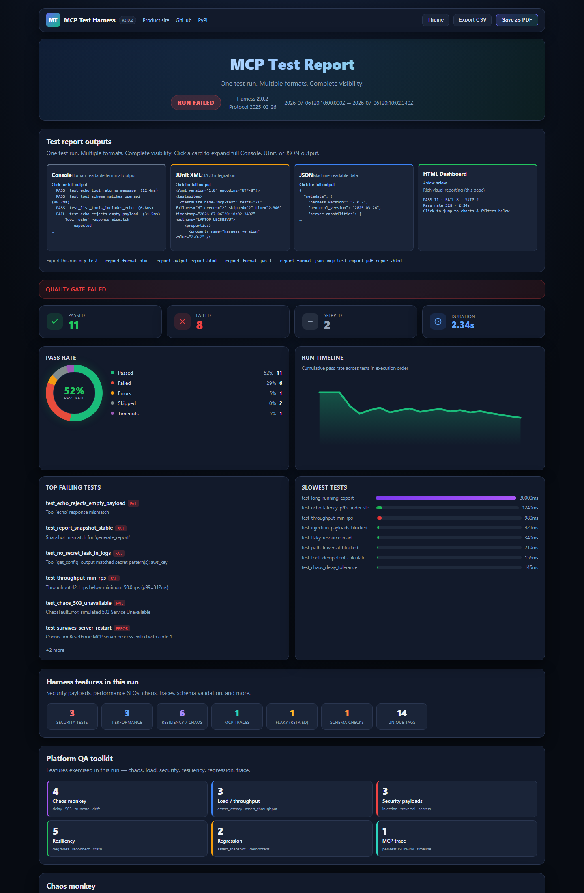
Click to open the interactive HTML dashboard sample
If you know pytest, you know MCP Test Harness. Same conventions, same discovery, same feel. The harness handles server lifecycle, MCP handshake, and session injection.
pip install mcp-test-harnessmcp-test init --server-command "python my_server.py"mcp-test# tests/test_my_server.py
from mcp_test_harness import assert_tool_call, assert_capabilities
async def test_server_has_tools(mcp_server):
"""Verify the server advertises tool capabilities."""
await assert_capabilities(mcp_server, {"tools": {}})
async def test_echo_tool(mcp_server):
"""Call the echo tool and check it works."""
result = await assert_tool_call(
mcp_server, "echo", {"message": "hello"}
)
assert result is not None
async def test_echo_latency(mcp_server):
"""Ensure echo responds within 200ms at p95."""
await assert_latency(
mcp_server, "echo", {"message": "hi"},
p95_ms=200, iterations=20, warmup=3
)
Finds test_*.py files and test_ functions automatically. pytest conventions. Broken files log warnings, don't crash the run.
Compare responses against stored snapshots. ignore_fields for volatile data, mask_patterns for dynamic strings. Update with --update-snapshots.
Multiple workers, each with its own server instance. Tests from the same file stay on one worker for fixture correctness.
mcp-test --watch re-runs when test files change. Configurable poll interval with debounce for rapid saves.
@marker(timeout=60, retry=3, tags=["smoke"]). Filter with -m smoke or -k pattern. @skip(reason="...") for conditional skips.
JUnit XML for CI. JSON with full metadata. Self-contained HTML dashboard with charts. PDF export via Save as PDF or mcp-test export-pdf.
Custom assertions, fixtures, reporters, transport adapters. Load via config or Python entry points (auto-discovered).
stdio for local servers, SSE for remote, streamable HTTP with auth headers. Test local and remote servers identically.
Pre-built images on ghcr.io. Runtime (:latest) and dev (:dev) targets. No local Python needed for CI.
assert_tool_denied, assert_authorization_boundary. MCP-aware security assertions. Pairs with MCP-Bastion for runtime defense.
JSON-RPC envelope checks. Post-connect validation of initialize, tools/list, resources, prompts. Best-effort call_tool probe.
Built-in mcp_server (per-test) and mcp_server_session (per-module). Custom fixtures with setup/teardown. Cycle detection.
No complex setup. No Java classpath. No separate test runner. One command and you're testing MCP servers.
JUnit XML, JSON reports, GitHub Action, Docker images. Designed for automated pipelines, not manual clicking.
MIT licensed. No per-seat, per-test, or per-server pricing. Use in any commercial product.
MCP Test Harness gives teams repeatable evidence that MCP behavior is safe, reliable, and governable.
Reduce unexpected behavior with automated JSON-RPC and MCP spec validation on every test run.
Catch common misuse patterns early. Authorization boundary assertions. Pairs with MCP-Bastion for runtime defense.
Auditable artifacts for internal governance and external frameworks like the EU AI Act. Full metadata in every report.
Works on Python 3.11+. Linux, macOS, Windows. Or use the Docker image.
Core harness. Lightweight: mcp + YAML + anyio. No heavy ML dependencies.
Pre-built runtime image. No local Python needed. Tags: latest, 3.0.9, dev.